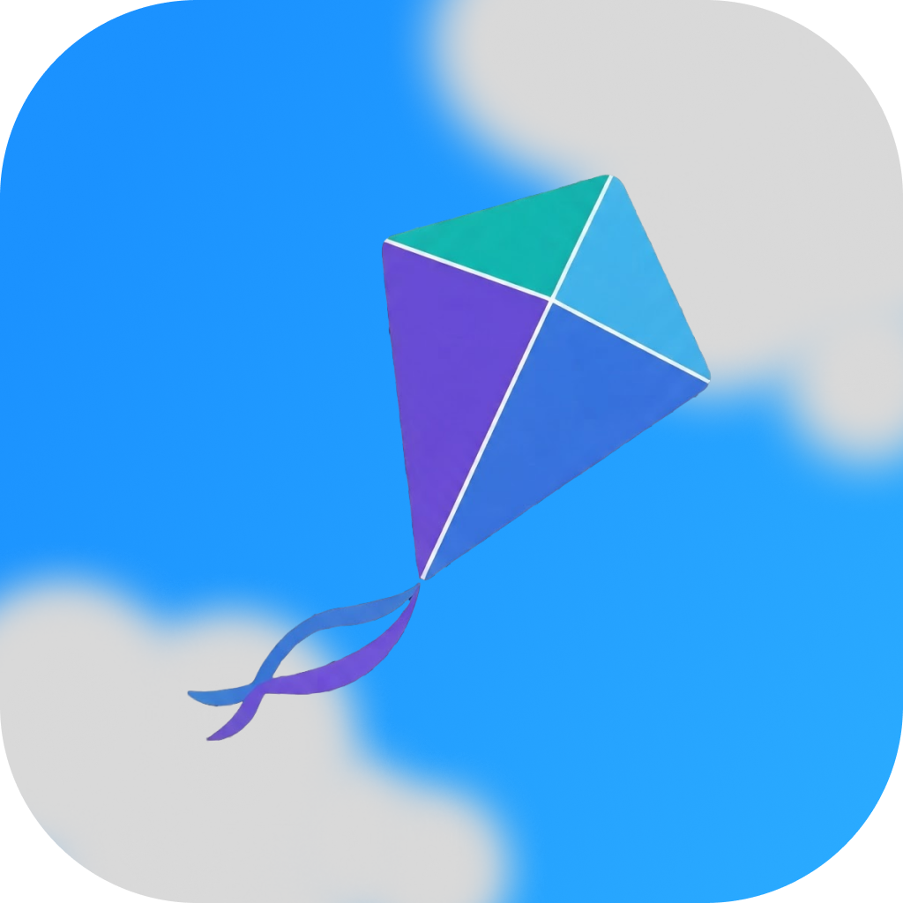
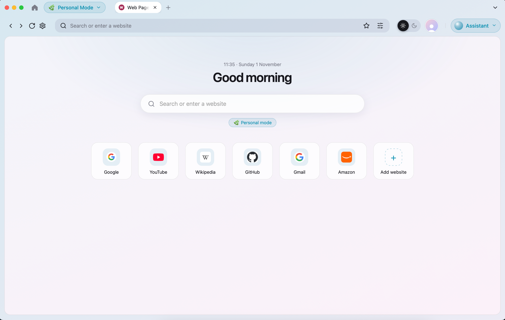

Shopping Mode
Give product research and your next purchase a dedicated space.

KiteAN AI-POWERED macOS BROWSER
Kite gives you dedicated focus modes for shopping, business, and personal browsing—so your browser can adapt to what you’re here to do.

01 — ABOUT KITE
Kite is a native macOS browser project built with WebKit, Objective-C, and C++. Switch between purpose-built Shopping, Business, and Personal modes, tune their accent colors, or create a focus mode of your own.
Read the project README02 — FOCUS MODES
Start with three modes. Customize their colors or make one of your own.
Give product research and your next purchase a dedicated space.
Keep work browsing in a focus mode built for getting things done.
Keep everyday browsing in its own space, separate from work.
Customize mode accent colors and create new focus modes in Settings.
TRY THE BETA
macOS Big Sur 11+. AI assistant and sign-in are not available in this beta.